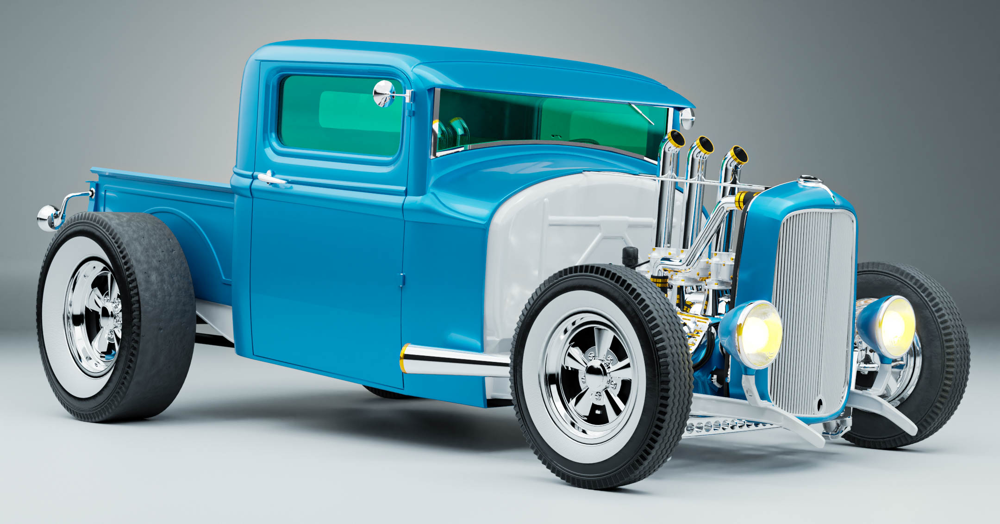
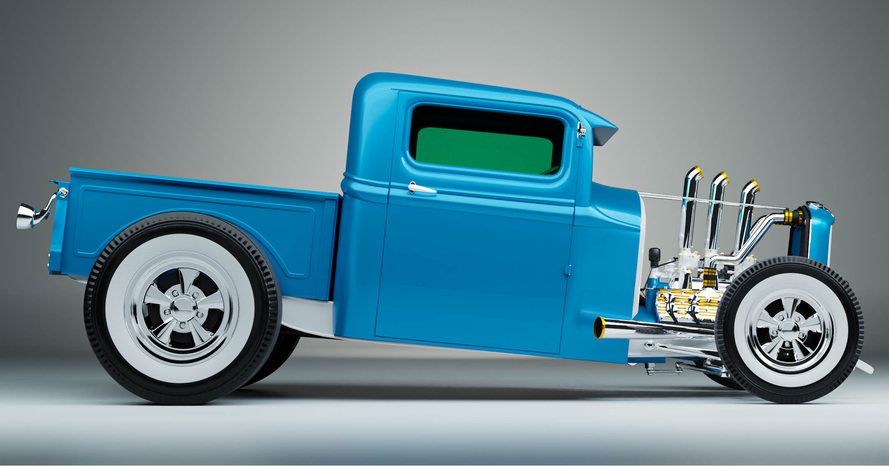
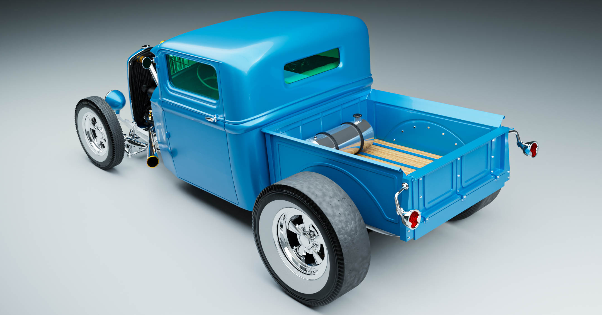
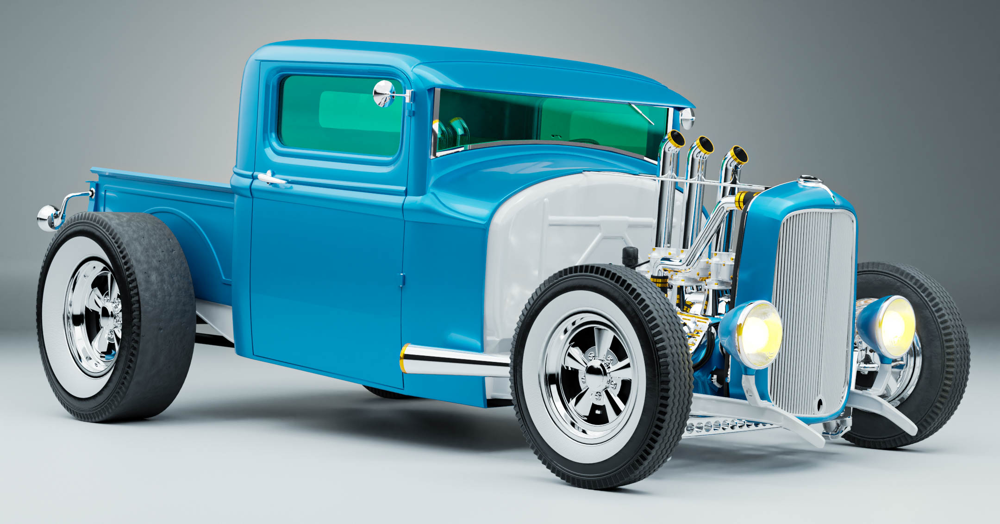
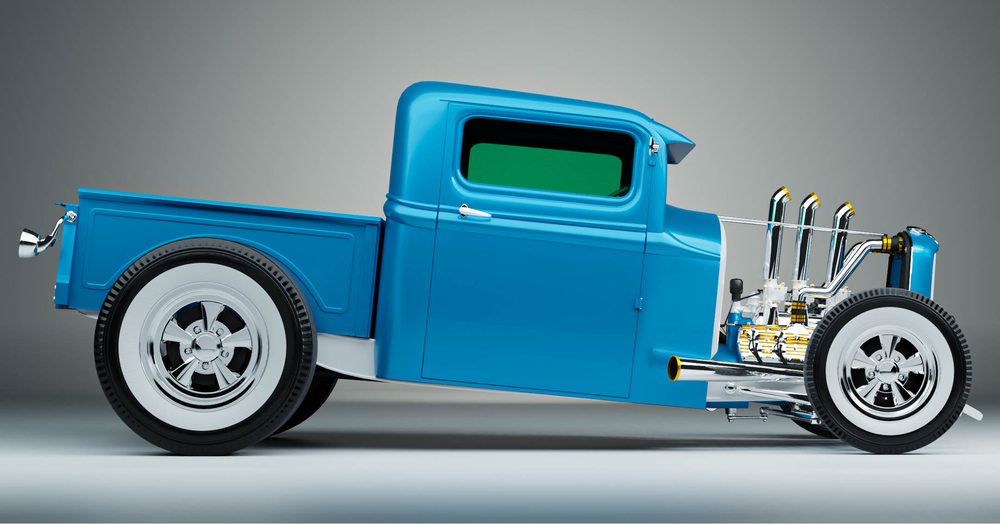
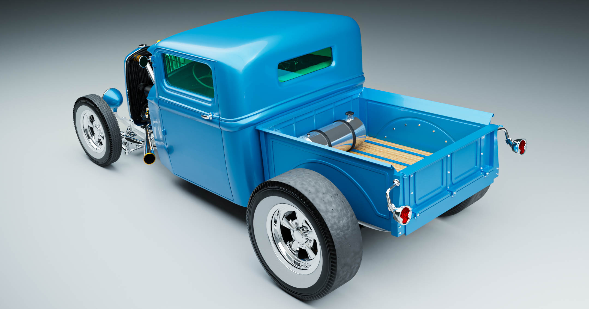

Hot Rod Ford 32 Pick-Up
Bro just look at this thing. Blue paintjob, aqua green window tint, Flathead V8, Cragar wheels, that's exactly how the 70s would look like if he was a car. Actually, not a car, a Hot Rod.
  Bro just look at this thing. Blue paintjob, aqua green window tint, Flathead V8, Cragar wheels, that's exactly how the 70s would look like if he was a car. Actually, not a car, a Hot Rod.
  